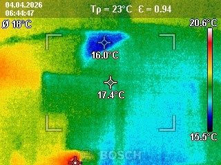
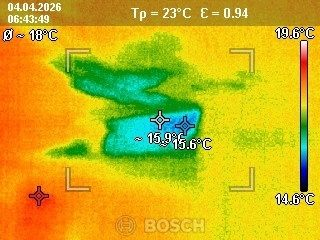
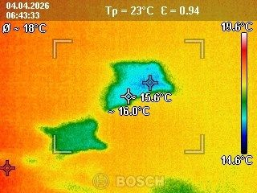

현장 상황
평택시 용이동 아파트 화장실의 누수를 담수테스트와 열화상검사로 점검한 현장입니다. 화장실 바닥에서 새는 물은 위치를 눈으로 찾기 어려워서, 누수 여부와 위치를 나누어 확인했습니다.
담수테스트
배수구를 막고 바닥에 물을 채워 수위 변화를 보는 방법입니다. 사진처럼 물에 형광색을 입히면 수위와 물이 번지는 모습이 잘 보입니다. 수위가 줄어든다면 바닥 방수층이나 배수구 주변에서 물이 빠지고 있다는 뜻입니다.

열화상검사로 위치 좁히기
담수테스트만으로는 정확한 위치까지 알기 어렵습니다. 열화상 카메라로 바닥면을 촬영해 주변과 온도가 다른 구간을 찾았습니다. 아래 이미지에서 초록·파랑으로 보이는 곳이 주변(주황·노랑)보다 온도가 낮게 나타난 구간입니다.



두 검사를 함께 쓰는 이유
담수테스트는 누수 여부는 알려주지만 정확한 위치까지는 알려주지 못하고, 열화상검사는 온도 차이로 위치를 짚어주지만 원인을 단정하기는 어렵습니다. 두 검사를 함께 하면 서로 결과를 검증할 수 있어 불필요한 철거를 줄일 수 있습니다.
마무리
담수테스트로 누수 여부를, 열화상검사로 위치를 함께 확인하면 한쪽 결과를 다른 쪽으로 검증할 수 있어 오진 가능성을 줄일 수 있습니다. 확인된 지점만 최소한으로 열어 작업하고, 작업 후에는 다시 확인합니다.
아파트는 아래층과 바로 이어지는 구조라 화장실 누수를 방치하면 이웃 세대로 번질 수 있습니다. 평택 용이동을 비롯한 아파트 단지에서 누수가 의심되시면 빠르게 상담 받아보세요.
접수 안내
비슷한 증상으로 문의하실 곳을 찾고 계신다면 전화로 접수해 주세요. 접수 건은 확인 후 신속하게 연결해 안내해 드리며, 현장 진단 후 견적에 동의하신 뒤에만 작업이 진행됩니다.